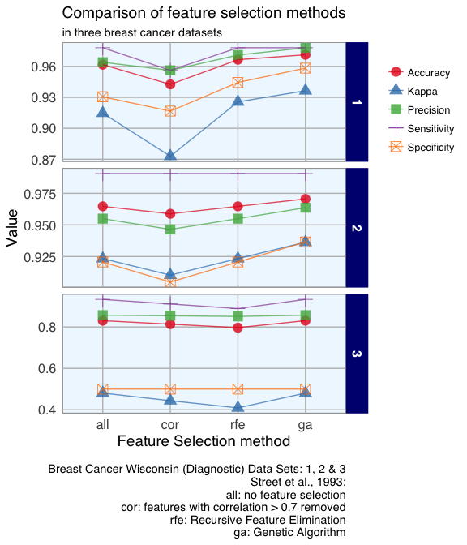
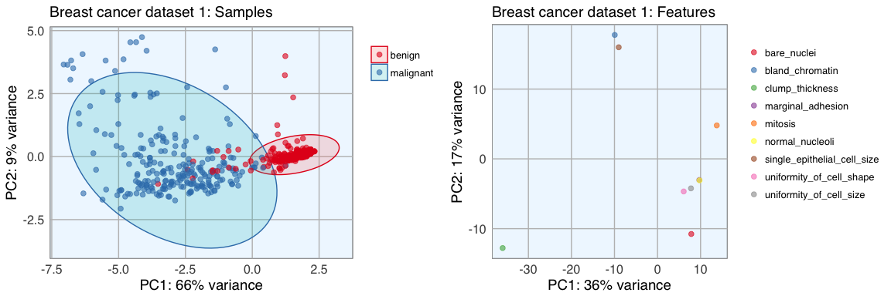
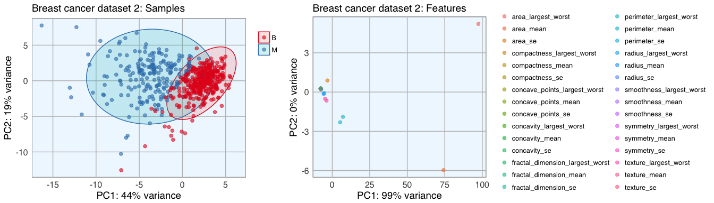
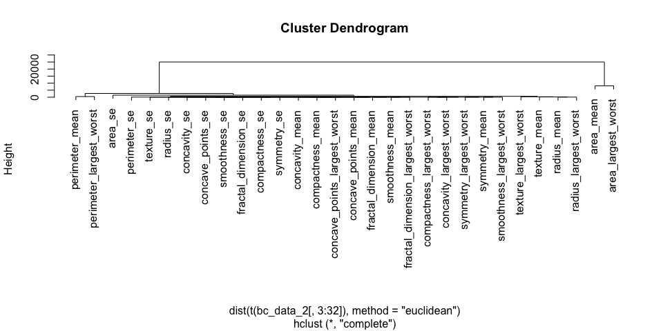
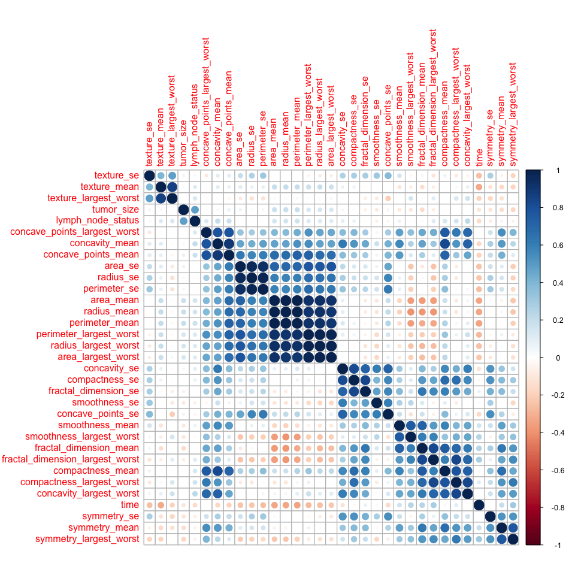
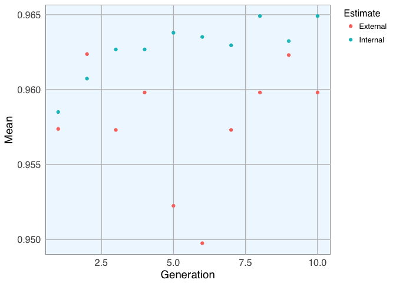

Machine learning uses so called features (i.e. variables or attributes) to generate predictive models. Using a suitable combination of features is essential for obtaining high precision and accuracy. Because too many (unspecific) features pose the problem of overfitting the model, we generally want to restrict the features in our models to those, that are most relevant for the response variable we want to predict. Using as few features as possible will also reduce the complexity of our models, which means it needs less time and computer power to run and is easier to understand.
There are several ways to identify how much each feature contributes to the model and to restrict the number of selected features. Here, I am going to examine the effect of feature selection via
- Correlation,
- Recursive Feature Elimination (RFE) and
- Genetic Algorithm (GA)
on Random Forest models.
Additionally, I want to know how different data properties affect the influence of these feature selection methods on the outcome. For that I am using three breast cancer datasets, one of which has few features; the other two are larger but differ in how well the outcome clusters in PCA.
Based on my comparisons of the correlation method, RFE and GA, I would conclude that for Random Forest models
- removing highly correlated features isn’t a generally suitable method,
- GA produced the best models in this example but is impractical for everyday use-cases with many features because it takes a lot of time to run with sufficient generations and individuals and
- data that doesn’t allow a good classification to begin with (because the features are not very distinct between classes) don’t necessarily benefit from feature selection.
My conclusions are of course not to be generalized to any ol’ data you are working with: There are many more feature selection methods and I am only looking at a limited number of datasets and only at their influence on Random Forest models. But even this small example shows how different features and parameters can influence your predictions. With machine learning, there is no “one size fits all”! It is always worthwhile to take a good hard look at your data, get acquainted with its quirks and properties before you even think about models and algorithms. And once you’ve got a feel for your data, investing the time and effort to compare different feature selection methods (or engineered features), model parameters and - finally - different machine learning algorithms can make a big difference!

Breast Cancer Wisconsin (Diagnostic) Dataset
The data I am going to use to explore feature selection methods is the Breast Cancer Wisconsin (Diagnostic) Dataset:
W.N. Street, W.H. Wolberg and O.L. Mangasarian. Nuclear feature extraction for breast tumor diagnosis. IS&T/SPIE 1993 International Symposium on Electronic Imaging: Science and Technology, volume 1905, pages 861-870, San Jose, CA, 1993.
O.L. Mangasarian, W.N. Street and W.H. Wolberg. Breast cancer diagnosis and prognosis via linear programming. Operations Research, 43(4), pages 570-577, July-August 1995.
W.H. Wolberg, W.N. Street, and O.L. Mangasarian. Machine learning techniques to diagnose breast cancer from fine-needle aspirates. Cancer Letters 77 (1994) 163-171.
W.H. Wolberg, W.N. Street, and O.L. Mangasarian. Image analysis and machine learning applied to breast cancer diagnosis and prognosis. Analytical and Quantitative Cytology and Histology, Vol. 17 No. 2, pages 77-87, April 1995.
W.H. Wolberg, W.N. Street, D.M. Heisey, and O.L. Mangasarian. Computerized breast cancer diagnosis and prognosis from fine needle aspirates. Archives of Surgery 1995;130:511-516.
W.H. Wolberg, W.N. Street, D.M. Heisey, and O.L. Mangasarian. Computer-derived nuclear features distinguish malignant from benign breast cytology. Human Pathology, 26:792–796, 1995.
The data was downloaded from the UC Irvine Machine Learning Repository. The features in these datasets characterise cell nucleus properties and were generated from image analysis of fine needle aspirates (FNA) of breast masses.
Included are three datasets. The first dataset is small with only 9 features, the other two datasets have 30 and 33 features and vary in how strongly the two predictor classes cluster in PCA. I want to explore the effect of different feature selection methods on datasets with these different properties.
But first, I want to get to know the data I am working with.
Breast cancer dataset 1
The first dataset looks at the predictor classes:
- malignant or
- benign breast mass.
The phenotypes for characterisation are:
- Sample ID (code number)
- Clump thickness
- Uniformity of cell size
- Uniformity of cell shape
- Marginal adhesion
- Single epithelial cell size
- Number of bare nuclei
- Bland chromatin
- Number of normal nuclei
- Mitosis
- Classes, i.e. diagnosis
Missing values are imputed with the mice package.
bc_data <- read.table("breast-cancer-wisconsin.data.txt", header = FALSE, sep = ",")
colnames(bc_data) <- c("sample_code_number", "clump_thickness", "uniformity_of_cell_size", "uniformity_of_cell_shape", "marginal_adhesion", "single_epithelial_cell_size",
"bare_nuclei", "bland_chromatin", "normal_nucleoli", "mitosis", "classes")
bc_data$classes <- ifelse(bc_data$classes == "2", "benign",
ifelse(bc_data$classes == "4", "malignant", NA))
bc_data[bc_data == "?"] <- NA
# how many NAs are in the data
length(which(is.na(bc_data)))
## [1] 16
# impute missing data
library(mice)
bc_data[,2:10] <- apply(bc_data[, 2:10], 2, function(x) as.numeric(as.character(x)))
dataset_impute <- mice(bc_data[, 2:10], print = FALSE)
bc_data <- cbind(bc_data[, 11, drop = FALSE], mice::complete(dataset_impute, 1))
bc_data$classes <- as.factor(bc_data$classes)
# how many benign and malignant cases are there?
summary(bc_data$classes)
## benign malignant
## 458 241
str(bc_data)
## 'data.frame': 699 obs. of 10 variables:
## $ classes : Factor w/ 2 levels "benign","malignant": 1 1 1 1 1 2 1 1 1 1 ...
## $ clump_thickness : num 5 5 3 6 4 8 1 2 2 4 ...
## $ uniformity_of_cell_size : num 1 4 1 8 1 10 1 1 1 2 ...
## $ uniformity_of_cell_shape : num 1 4 1 8 1 10 1 2 1 1 ...
## $ marginal_adhesion : num 1 5 1 1 3 8 1 1 1 1 ...
## $ single_epithelial_cell_size: num 2 7 2 3 2 7 2 2 2 2 ...
## $ bare_nuclei : num 1 10 2 4 1 10 10 1 1 1 ...
## $ bland_chromatin : num 3 3 3 3 3 9 3 3 1 2 ...
## $ normal_nucleoli : num 1 2 1 7 1 7 1 1 1 1 ...
## $ mitosis : num 1 1 1 1 1 1 1 1 5 1 ...
Breast cancer dataset 2
The second dataset looks again at the predictor classes:
- M: malignant or
- B: benign breast mass.
The first two columns give:
- Sample ID
- Classes, i.e. diagnosis
For each cell nucleus, the following ten characteristics were measured:
- Radius (mean of all distances from the center to points on the perimeter)
- Texture (standard deviation of gray-scale values)
- Perimeter
- Area
- Smoothness (local variation in radius lengths)
- Compactness (perimeter^2 / area - 1.0)
- Concavity (severity of concave portions of the contour)
- Concave points (number of concave portions of the contour)
- Symmetry
- Fractal dimension (“coastline approximation” - 1)
For each characteristic three measures are given:
- Mean
- Standard error
- Largest/ “worst”
bc_data_2 <- read.table("wdbc.data.txt", header = FALSE, sep = ",")
phenotypes <- rep(c("radius", "texture", "perimeter", "area", "smoothness", "compactness", "concavity", "concave_points", "symmetry", "fractal_dimension"), 3)
types <- rep(c("mean", "se", "largest_worst"), each = 10)
colnames(bc_data_2) <- c("ID", "diagnosis", paste(phenotypes, types, sep = "_"))
# how many NAs are in the data
length(which(is.na(bc_data_2)))
## [1] 0
# how many benign and malignant cases are there?
summary(bc_data_2$diagnosis)
## B M
## 357 212
str(bc_data_2)
## 'data.frame': 569 obs. of 32 variables:
## $ ID : int 842302 842517 84300903 84348301 84358402 843786 844359 84458202 844981 84501001 ...
## $ diagnosis : Factor w/ 2 levels "B","M": 2 2 2 2 2 2 2 2 2 2 ...
## $ radius_mean : num 18 20.6 19.7 11.4 20.3 ...
## $ texture_mean : num 10.4 17.8 21.2 20.4 14.3 ...
## $ perimeter_mean : num 122.8 132.9 130 77.6 135.1 ...
## $ area_mean : num 1001 1326 1203 386 1297 ...
## $ smoothness_mean : num 0.1184 0.0847 0.1096 0.1425 0.1003 ...
## $ compactness_mean : num 0.2776 0.0786 0.1599 0.2839 0.1328 ...
## $ concavity_mean : num 0.3001 0.0869 0.1974 0.2414 0.198 ...
## $ concave_points_mean : num 0.1471 0.0702 0.1279 0.1052 0.1043 ...
## $ symmetry_mean : num 0.242 0.181 0.207 0.26 0.181 ...
## $ fractal_dimension_mean : num 0.0787 0.0567 0.06 0.0974 0.0588 ...
## $ radius_se : num 1.095 0.543 0.746 0.496 0.757 ...
## $ texture_se : num 0.905 0.734 0.787 1.156 0.781 ...
## $ perimeter_se : num 8.59 3.4 4.58 3.44 5.44 ...
## $ area_se : num 153.4 74.1 94 27.2 94.4 ...
## $ smoothness_se : num 0.0064 0.00522 0.00615 0.00911 0.01149 ...
## $ compactness_se : num 0.049 0.0131 0.0401 0.0746 0.0246 ...
## $ concavity_se : num 0.0537 0.0186 0.0383 0.0566 0.0569 ...
## $ concave_points_se : num 0.0159 0.0134 0.0206 0.0187 0.0188 ...
## $ symmetry_se : num 0.03 0.0139 0.0225 0.0596 0.0176 ...
## $ fractal_dimension_se : num 0.00619 0.00353 0.00457 0.00921 0.00511 ...
## $ radius_largest_worst : num 25.4 25 23.6 14.9 22.5 ...
## $ texture_largest_worst : num 17.3 23.4 25.5 26.5 16.7 ...
## $ perimeter_largest_worst : num 184.6 158.8 152.5 98.9 152.2 ...
## $ area_largest_worst : num 2019 1956 1709 568 1575 ...
## $ smoothness_largest_worst : num 0.162 0.124 0.144 0.21 0.137 ...
## $ compactness_largest_worst : num 0.666 0.187 0.424 0.866 0.205 ...
## $ concavity_largest_worst : num 0.712 0.242 0.45 0.687 0.4 ...
## $ concave_points_largest_worst : num 0.265 0.186 0.243 0.258 0.163 ...
## $ symmetry_largest_worst : num 0.46 0.275 0.361 0.664 0.236 ...
## $ fractal_dimension_largest_worst: num 0.1189 0.089 0.0876 0.173 0.0768 ...
Breast cancer dataset 3
The third dataset looks at the predictor classes:
- R: recurring or
- N: nonrecurring breast cancer.
The first two columns give:
- Sample ID
- Classes, i.e. outcome
For each cell nucleus, the same ten characteristics and measures were given as in dataset 2, plus:
- Time (recurrence time if field 2 = R, disease-free time if field 2 = N)
- Tumor size - diameter of the excised tumor in centimeters
- Lymph node status - number of positive axillary lymph nodes observed at time of surgery
Missing values are imputed with the mice package.
bc_data_3 <- read.table("wpbc.data.txt", header = FALSE, sep = ",")
colnames(bc_data_3) <- c("ID", "outcome", "time", paste(phenotypes, types, sep = "_"), "tumor_size", "lymph_node_status")
bc_data_3[bc_data_3 == "?"] <- NA
# how many NAs are in the data
length(which(is.na(bc_data_3)))
## [1] 4
# impute missing data
library(mice)
bc_data_3[,3:35] <- apply(bc_data_3[,3:35], 2, function(x) as.numeric(as.character(x)))
dataset_impute <- mice(bc_data_3[,3:35], print = FALSE)
bc_data_3 <- cbind(bc_data_3[, 2, drop = FALSE], mice::complete(dataset_impute, 1))
# how many recurring and non-recurring cases are there?
summary(bc_data_3$outcome)
## N R
## 151 47
str(bc_data_3)
## 'data.frame': 198 obs. of 34 variables:
## $ outcome : Factor w/ 2 levels "N","R": 1 1 1 1 2 2 1 2 1 1 ...
## $ time : num 31 61 116 123 27 77 60 77 119 76 ...
## $ radius_mean : num 18 18 21.4 11.4 20.3 ...
## $ texture_mean : num 27.6 10.4 17.4 20.4 14.3 ...
## $ perimeter_mean : num 117.5 122.8 137.5 77.6 135.1 ...
## $ area_mean : num 1013 1001 1373 386 1297 ...
## $ smoothness_mean : num 0.0949 0.1184 0.0884 0.1425 0.1003 ...
## $ compactness_mean : num 0.104 0.278 0.119 0.284 0.133 ...
## $ concavity_mean : num 0.109 0.3 0.126 0.241 0.198 ...
## $ concave_points_mean : num 0.0706 0.1471 0.0818 0.1052 0.1043 ...
## $ symmetry_mean : num 0.186 0.242 0.233 0.26 0.181 ...
## $ fractal_dimension_mean : num 0.0633 0.0787 0.0601 0.0974 0.0588 ...
## $ radius_se : num 0.625 1.095 0.585 0.496 0.757 ...
## $ texture_se : num 1.89 0.905 0.611 1.156 0.781 ...
## $ perimeter_se : num 3.97 8.59 3.93 3.44 5.44 ...
## $ area_se : num 71.5 153.4 82.2 27.2 94.4 ...
## $ smoothness_se : num 0.00443 0.0064 0.00617 0.00911 0.01149 ...
## $ compactness_se : num 0.0142 0.049 0.0345 0.0746 0.0246 ...
## $ concavity_se : num 0.0323 0.0537 0.033 0.0566 0.0569 ...
## $ concave_points_se : num 0.00985 0.01587 0.01805 0.01867 0.01885 ...
## $ symmetry_se : num 0.0169 0.03 0.0309 0.0596 0.0176 ...
## $ fractal_dimension_se : num 0.00349 0.00619 0.00504 0.00921 0.00511 ...
## $ radius_largest_worst : num 21.6 25.4 24.9 14.9 22.5 ...
## $ texture_largest_worst : num 37.1 17.3 21 26.5 16.7 ...
## $ perimeter_largest_worst : num 139.7 184.6 159.1 98.9 152.2 ...
## $ area_largest_worst : num 1436 2019 1949 568 1575 ...
## $ smoothness_largest_worst : num 0.119 0.162 0.119 0.21 0.137 ...
## $ compactness_largest_worst : num 0.193 0.666 0.345 0.866 0.205 ...
## $ concavity_largest_worst : num 0.314 0.712 0.341 0.687 0.4 ...
## $ concave_points_largest_worst : num 0.117 0.265 0.203 0.258 0.163 ...
## $ symmetry_largest_worst : num 0.268 0.46 0.433 0.664 0.236 ...
## $ fractal_dimension_largest_worst: num 0.0811 0.1189 0.0907 0.173 0.0768 ...
## $ tumor_size : num 5 3 2.5 2 3.5 2.5 1.5 4 2 6 ...
## $ lymph_node_status : num 5 2 0 0 0 0 0 10 1 20 ...
Principal Component Analysis (PCA)
To get an idea about the dimensionality and variance of the datasets, I am first looking at PCA plots for samples and features. The first two principal components (PCs) show the two components that explain the majority of variation in the data.
After defining my custom ggplot2 theme, I am creating a function that performs the PCA (using the pcaGoPromoter package), calculates ellipses of the data points (with the ellipse package) and produces the plot with ggplot2. Some of the features in datasets 2 and 3 are not very distinct and overlap in the PCA plots, therefore I am also plotting hierarchical clustering dendrograms.
# plotting theme
library(ggplot2)
my_theme <- function(base_size = 12, base_family = "sans"){
theme_minimal(base_size = base_size, base_family = base_family) +
theme(
axis.text = element_text(size = 12),
axis.text.x = element_text(angle = 0, vjust = 0.5, hjust = 0.5),
axis.title = element_text(size = 14),
panel.grid.major = element_line(color = "grey"),
panel.grid.minor = element_blank(),
panel.background = element_rect(fill = "aliceblue"),
strip.background = element_rect(fill = "navy", color = "navy", size = 1),
strip.text = element_text(face = "bold", size = 12, color = "white"),
legend.position = "right",
legend.justification = "top",
legend.background = element_blank(),
panel.border = element_rect(color = "grey", fill = NA, size = 0.5)
)
}
theme_set(my_theme())
# function for PCA plotting
library(pcaGoPromoter)
library(ellipse)
pca_func <- function(data, groups, title, print_ellipse = TRUE) {
# perform pca and extract scores
pcaOutput <- pca(data, printDropped = FALSE, scale = TRUE, center = TRUE)
pcaOutput2 <- as.data.frame(pcaOutput$scores)
# define groups for plotting
pcaOutput2$groups <- groups
# when plotting samples calculate ellipses for plotting (when plotting features, there are no replicates)
if (print_ellipse) {
centroids <- aggregate(cbind(PC1, PC2) ~ groups, pcaOutput2, mean)
conf.rgn <- do.call(rbind, lapply(unique(pcaOutput2$groups), function(t)
data.frame(groups = as.character(t),
ellipse(cov(pcaOutput2[pcaOutput2$groups == t, 1:2]),
centre = as.matrix(centroids[centroids$groups == t, 2:3]),
level = 0.95),
stringsAsFactors = FALSE)))
plot <- ggplot(data = pcaOutput2, aes(x = PC1, y = PC2, group = groups, color = groups)) +
geom_polygon(data = conf.rgn, aes(fill = groups), alpha = 0.2) +
geom_point(size = 2, alpha = 0.6) +
scale_color_brewer(palette = "Set1") +
labs(title = title,
color = "",
fill = "",
x = paste0("PC1: ", round(pcaOutput$pov[1], digits = 2) * 100, "% variance"),
y = paste0("PC2: ", round(pcaOutput$pov[2], digits = 2) * 100, "% variance"))
} else {
# if there are fewer than 10 groups (e.g. the predictor classes) I want to have colors from RColorBrewer
if (length(unique(pcaOutput2$groups)) <= 10) {
plot <- ggplot(data = pcaOutput2, aes(x = PC1, y = PC2, group = groups, color = groups)) +
geom_point(size = 2, alpha = 0.6) +
scale_color_brewer(palette = "Set1") +
labs(title = title,
color = "",
fill = "",
x = paste0("PC1: ", round(pcaOutput$pov[1], digits = 2) * 100, "% variance"),
y = paste0("PC2: ", round(pcaOutput$pov[2], digits = 2) * 100, "% variance"))
} else {
# otherwise use the default rainbow colors
plot <- ggplot(data = pcaOutput2, aes(x = PC1, y = PC2, group = groups, color = groups)) +
geom_point(size = 2, alpha = 0.6) +
labs(title = title,
color = "",
fill = "",
x = paste0("PC1: ", round(pcaOutput$pov[1], digits = 2) * 100, "% variance"),
y = paste0("PC2: ", round(pcaOutput$pov[2], digits = 2) * 100, "% variance"))
}
}
return(plot)
}
library(gridExtra)
library(grid)
- Dataset 1
p1 <- pca_func(data = t(bc_data[, 2:10]), groups = as.character(bc_data$classes), title = "Breast cancer dataset 1: Samples")
p2 <- pca_func(data = bc_data[, 2:10], groups = as.character(colnames(bc_data[, 2:10])), title = "Breast cancer dataset 1: Features", print_ellipse = FALSE)
grid.arrange(p1, p2, ncol = 2)

h_1 <- hclust(dist(t(bc_data[, 2:10]), method = "euclidean"), method = "complete")
plot(h_1)

library(tidyr)
bc_data_gather <- bc_data %>%
gather(measure, value, clump_thickness:mitosis)
ggplot(data = bc_data_gather, aes(x = value, fill = classes, color = classes)) +
geom_density(alpha = 0.3, size = 1) +
geom_rug() +
scale_fill_brewer(palette = "Set1") +
scale_color_brewer(palette = "Set1") +
facet_wrap( ~ measure, scales = "free_y", ncol = 3)

- Dataset 2
p1 <- pca_func(data = t(bc_data_2[, 3:32]), groups = as.character(bc_data_2$diagnosis), title = "Breast cancer dataset 2: Samples")
p2 <- pca_func(data = bc_data_2[, 3:32], groups = as.character(colnames(bc_data_2[, 3:32])), title = "Breast cancer dataset 2: Features", print_ellipse = FALSE)
grid.arrange(p1, p2, ncol = 2, widths = c(0.4, 0.6))

h_2 <- hclust(dist(t(bc_data_2[, 3:32]), method = "euclidean"), method = "complete")
plot(h_2)

bc_data_2_gather <- bc_data_2[, -1] %>%
gather(measure, value, radius_mean:fractal_dimension_largest_worst)
ggplot(data = bc_data_2_gather, aes(x = value, fill = diagnosis, color = diagnosis)) +
geom_density(alpha = 0.3, size = 1) +
geom_rug() +
scale_fill_brewer(palette = "Set1") +
scale_color_brewer(palette = "Set1") +
facet_wrap( ~ measure, scales = "free_y", ncol = 3)

- Dataset 3
p1 <- pca_func(data = t(bc_data_3[, 2:34]), groups = as.character(bc_data_3$outcome), title = "Breast cancer dataset 3: Samples")
p2 <- pca_func(data = bc_data_3[, 2:34], groups = as.character(colnames(bc_data_3[, 2:34])), title = "Breast cancer dataset 3: Features", print_ellipse = FALSE)
grid.arrange(p1, p2, ncol = 2, widths = c(0.4, 0.6))

h_3 <- hclust(dist(t(bc_data_3[,2:34]), method = "euclidean"), method = "complete")
plot(h_3)

Datasets 1 and 2 show a nice separation of benign and malignant masses, models based on these features will likely be able to predict the classes quite well for most samples. The classes in dataset 3 don’t cluster into distinct groups, I assume that prediction will not be as accurate for these features.
The features of datasets 2 and 3 don’t cluster very distinctly, many features seem to show similar patterns across samples. Selecting an approriate subset of features will probably have different effects on the three different datasets.
bc_data_3_gather <- bc_data_3 %>%
gather(measure, value, time:lymph_node_status)
ggplot(data = bc_data_3_gather, aes(x = value, fill = outcome, color = outcome)) +
geom_density(alpha = 0.3, size = 1) +
geom_rug() +
scale_fill_brewer(palette = "Set1") +
scale_color_brewer(palette = "Set1") +
facet_wrap( ~ measure, scales = "free_y", ncol = 3)

Feature importance
To get an idea about the feature’s respective importances, I’m running Random Forest models with 10 x 10 cross validation using the caret package. If I wanted to use feature importance to select features for modeling, I would need to perform it on the training data instead of on the complete dataset. But here, I only want to use it to get acquainted with my data. I am again defining a function that estimates the feature importance and produces a plot.
library(caret)
library(doParallel) # parallel processing
registerDoParallel()
# prepare training scheme
control <- trainControl(method = "repeatedcv", number = 10, repeats = 10)
feature_imp <- function(model, title) {
# estimate variable importance
importance <- varImp(model, scale = TRUE)
# prepare dataframes for plotting
importance_df_1 <- importance$importance
importance_df_1$group <- rownames(importance_df_1)
importance_df_2 <- importance_df_1
importance_df_2$Overall <- 0
importance_df <- rbind(importance_df_1, importance_df_2)
plot <- ggplot() +
geom_point(data = importance_df_1, aes(x = Overall, y = group, color = group), size = 2) +
geom_path(data = importance_df, aes(x = Overall, y = group, color = group, group = group), size = 1) +
theme(legend.position = "none") +
labs(
x = "Importance",
y = "",
title = title,
subtitle = "Scaled feature importance",
caption = "\nDetermined with Random Forest and
repeated cross validation (10 repeats, 10 times)"
)
return(plot)
}
# train the model
set.seed(27)
imp_1 <- train(classes ~ ., data = bc_data, method = "rf", preProcess = c("scale", "center"), trControl = control)
p1 <- feature_imp(imp_1, title = "Breast cancer dataset 1")
set.seed(27)
imp_2 <- train(diagnosis ~ ., data = bc_data_2[, -1], method = "rf", preProcess = c("scale", "center"), trControl = control)
p2 <- feature_imp(imp_2, title = "Breast cancer dataset 2")
set.seed(27)
imp_3 <- train(outcome ~ ., data = bc_data_3, method = "rf", preProcess = c("scale", "center"), trControl = control)
p3 <- feature_imp(imp_3, title = "Breast cancer dataset 3")
grid.arrange(p1, p2, p3, ncol = 3, widths = c(0.3, 0.35, 0.35))

Feature Selection
Now that I have a general idea about the data, I will run three feature selection methods on all three datasets and compare how they effect the prediction accuracy of a Random Forest model.
Creating train and test data
Before doing anything else with the data, we need to subset the datasets into train and test data. Performing feature selection on the whole dataset would lead to prediction bias, we therefore need to run the whole modeling process on the training data alone!
- Dataset 1
set.seed(27)
bc_data_index <- createDataPartition(bc_data$classes, p = 0.7, list = FALSE)
bc_data_train <- bc_data[bc_data_index, ]
bc_data_test <- bc_data[-bc_data_index, ]
- Dataset 2
set.seed(27)
bc_data_2_index <- createDataPartition(bc_data_2$diagnosis, p = 0.7, list = FALSE)
bc_data_2_train <- bc_data_2[bc_data_2_index, ]
bc_data_2_test <- bc_data_2[-bc_data_2_index, ]
- Dataset 3
set.seed(27)
bc_data_3_index <- createDataPartition(bc_data_3$outcome, p = 0.7, list = FALSE)
bc_data_3_train <- bc_data_3[bc_data_3_index, ]
bc_data_3_test <- bc_data_3[-bc_data_3_index, ]
Correlation
Often we have features that are highly correlated and thus provide redundant information. By eliminating highly correlated features we can avoid a predictive bias for the information contained in these features. This also shows us, that when we want to make statements about the biological/ medical importance of specific features, we need to keep in mind that just because they are suitable to predicting an outcome they are not necessarily causal - they could simply be correlated with causal factors.
Correlations between all features are calculated and visualised with the corrplot package. I am then removing all features with a correlation higher than 0.7, keeping the feature with the lower mean.
- Dataset 1
library(corrplot)
# calculate correlation matrix
corMatMy <- cor(bc_data_train[, -1])
corrplot(corMatMy, order = "hclust")

#Apply correlation filter at 0.70,
highlyCor <- colnames(bc_data_train[, -1])[findCorrelation(corMatMy, cutoff = 0.7, verbose = TRUE)]
## Compare row 2 and column 3 with corr 0.913
## Means: 0.716 vs 0.601 so flagging column 2
## Compare row 3 and column 6 with corr 0.741
## Means: 0.677 vs 0.579 so flagging column 3
## Compare row 6 and column 7 with corr 0.706
## Means: 0.602 vs 0.545 so flagging column 6
## All correlations <= 0.7
# which variables are flagged for removal?
highlyCor
## [1] "uniformity_of_cell_size" "uniformity_of_cell_shape"
## [3] "bare_nuclei"
#then we remove these variables
bc_data_cor <- bc_data_train[, which(!colnames(bc_data_train) %in% highlyCor)]
Correlation between features in dataset 1 is generally high and 4 out of 10 feature were flagged for removal.
- Dataset 2
corMatMy <- cor(bc_data_2_train[, 3:32])
corrplot(corMatMy, order = "hclust")

highlyCor <- colnames(bc_data_2_train[, 3:32])[findCorrelation(corMatMy, cutoff = 0.7, verbose = TRUE)]
## Compare row 7 and column 8 with corr 0.92
## Means: 0.579 vs 0.393 so flagging column 7
## Compare row 8 and column 6 with corr 0.84
## Means: 0.548 vs 0.38 so flagging column 8
## Compare row 6 and column 28 with corr 0.827
## Means: 0.536 vs 0.368 so flagging column 6
## Compare row 28 and column 27 with corr 0.855
## Means: 0.506 vs 0.357 so flagging column 28
## Compare row 27 and column 26 with corr 0.894
## Means: 0.46 vs 0.346 so flagging column 27
## Compare row 23 and column 21 with corr 0.993
## Means: 0.454 vs 0.336 so flagging column 23
## Compare row 21 and column 24 with corr 0.983
## Means: 0.419 vs 0.327 so flagging column 21
## Compare row 26 and column 30 with corr 0.817
## Means: 0.402 vs 0.323 so flagging column 26
## Compare row 24 and column 3 with corr 0.943
## Means: 0.383 vs 0.312 so flagging column 24
## Compare row 3 and column 1 with corr 0.998
## Means: 0.347 vs 0.306 so flagging column 3
## Compare row 1 and column 4 with corr 0.986
## Means: 0.302 vs 0.304 so flagging column 4
## Compare row 1 and column 14 with corr 0.726
## Means: 0.264 vs 0.304 so flagging column 14
## Compare row 13 and column 11 with corr 0.973
## Means: 0.32 vs 0.304 so flagging column 13
## Compare row 18 and column 16 with corr 0.757
## Means: 0.388 vs 0.295 so flagging column 18
## Compare row 16 and column 17 with corr 0.796
## Means: 0.404 vs 0.288 so flagging column 16
## Compare row 9 and column 29 with corr 0.711
## Means: 0.343 vs 0.274 so flagging column 9
## Compare row 17 and column 20 with corr 0.745
## Means: 0.306 vs 0.261 so flagging column 17
## Compare row 5 and column 25 with corr 0.809
## Means: 0.311 vs 0.255 so flagging column 5
## Compare row 30 and column 10 with corr 0.753
## Means: 0.288 vs 0.241 so flagging column 30
## Compare row 22 and column 2 with corr 0.913
## Means: 0.243 vs 0.242 so flagging column 22
## All correlations <= 0.7
highlyCor
## [1] "concavity_mean" "concave_points_mean"
## [3] "compactness_mean" "concave_points_largest_worst"
## [5] "concavity_largest_worst" "perimeter_largest_worst"
## [7] "radius_largest_worst" "compactness_largest_worst"
## [9] "area_largest_worst" "perimeter_mean"
## [11] "perimeter_se" "area_mean"
## [13] "concave_points_se" "compactness_se"
## [15] "area_se" "symmetry_mean"
## [17] "concavity_se" "smoothness_mean"
## [19] "fractal_dimension_largest_worst" "texture_largest_worst"
bc_data_2_cor <- bc_data_2_train[, which(!colnames(bc_data_2_train) %in% highlyCor)]
Here, we have more variation between the 30 features: some are highly correlated, while others seem to be very distinct. 20 are flagged for removal (see output above).
- Dataset 3
corMatMy <- cor(bc_data_3_train[, -1])
corrplot(corMatMy, order = "hclust")

highlyCor <- colnames(bc_data_3_train[, -1])[findCorrelation(corMatMy, cutoff = 0.7, verbose = TRUE)]
## Compare row 8 and column 9 with corr 0.898
## Means: 0.425 vs 0.286 so flagging column 8
## Compare row 9 and column 7 with corr 0.714
## Means: 0.39 vs 0.277 so flagging column 9
## Compare row 7 and column 29 with corr 0.753
## Means: 0.364 vs 0.271 so flagging column 7
## Compare row 4 and column 2 with corr 0.996
## Means: 0.348 vs 0.264 so flagging column 4
## Compare row 2 and column 5 with corr 0.993
## Means: 0.33 vs 0.259 so flagging column 2
## Compare row 5 and column 24 with corr 0.921
## Means: 0.304 vs 0.255 so flagging column 5
## Compare row 24 and column 22 with corr 0.985
## Means: 0.272 vs 0.252 so flagging column 24
## Compare row 11 and column 31 with corr 0.83
## Means: 0.341 vs 0.247 so flagging column 11
## Compare row 22 and column 15 with corr 0.773
## Means: 0.24 vs 0.242 so flagging column 15
## Compare row 22 and column 25 with corr 0.989
## Means: 0.217 vs 0.242 so flagging column 25
## Compare row 14 and column 12 with corr 0.975
## Means: 0.256 vs 0.243 so flagging column 14
## Compare row 31 and column 28 with corr 0.71
## Means: 0.328 vs 0.238 so flagging column 31
## Compare row 18 and column 17 with corr 0.812
## Means: 0.331 vs 0.229 so flagging column 18
## Compare row 28 and column 27 with corr 0.84
## Means: 0.286 vs 0.219 so flagging column 28
## Compare row 17 and column 21 with corr 0.839
## Means: 0.285 vs 0.212 so flagging column 17
## Compare row 10 and column 30 with corr 0.766
## Means: 0.277 vs 0.204 so flagging column 10
## Compare row 6 and column 26 with corr 0.754
## Means: 0.235 vs 0.198 so flagging column 6
## Compare row 3 and column 23 with corr 0.858
## Means: 0.164 vs 0.195 so flagging column 23
## All correlations <= 0.7
highlyCor
## [1] "concavity_mean" "concave_points_mean"
## [3] "compactness_mean" "perimeter_mean"
## [5] "radius_mean" "area_mean"
## [7] "perimeter_largest_worst" "fractal_dimension_mean"
## [9] "perimeter_se" "area_se"
## [11] "area_largest_worst" "fractal_dimension_largest_worst"
## [13] "concavity_se" "concavity_largest_worst"
## [15] "compactness_se" "symmetry_mean"
## [17] "smoothness_mean" "texture_largest_worst"
bc_data_3_cor <- bc_data_3_train[, which(!colnames(bc_data_3_train) %in% highlyCor)]
The features in dataset 3 look similar: some are highly correlated, others are very different. 18 are flagged for removal (see output above).
Recursive Feature Elimination (RFE)
Another way to choose features is with Recursive Feature Elimination. RFE uses a Random Forest algorithm to test combinations of features and rate each with an accuracy score. The combination with the highest score is usually preferential.
- Dataset 1
# ensure the results are repeatable
set.seed(7)
# define the control using a random forest selection function with cross validation
control <- rfeControl(functions = rfFuncs, method = "cv", number = 10)
# run the RFE algorithm
results_1 <- rfe(x = bc_data_train[, -1], y = bc_data_train$classes, sizes = c(1:9), rfeControl = control)
# chosen features
predictors(results_1)
## [1] "bare_nuclei" "uniformity_of_cell_size"
## [3] "clump_thickness" "uniformity_of_cell_shape"
## [5] "bland_chromatin" "marginal_adhesion"
## [7] "mitosis" "normal_nucleoli"
## [9] "single_epithelial_cell_size"
# subset the chosen features
bc_data_rfe <- bc_data_train[, c(1, which(colnames(bc_data_train) %in% predictors(results_1)))]
- Dataset 2
set.seed(7)
results_2 <- rfe(x = bc_data_2_train[, -c(1, 2)], y = as.factor(bc_data_2_train$diagnosis), sizes = c(1:30), rfeControl = control)
predictors(results_2)
## [1] "perimeter_largest_worst" "area_largest_worst"
## [3] "radius_largest_worst" "concave_points_largest_worst"
## [5] "concave_points_mean" "texture_largest_worst"
## [7] "texture_mean" "area_se"
## [9] "concavity_largest_worst" "concavity_mean"
## [11] "radius_se" "perimeter_mean"
## [13] "radius_mean" "area_mean"
## [15] "perimeter_se" "smoothness_largest_worst"
## [17] "compactness_largest_worst" "symmetry_largest_worst"
## [19] "compactness_mean" "smoothness_mean"
## [21] "fractal_dimension_largest_worst" "concavity_se"
## [23] "symmetry_mean"
bc_data_2_rfe <- bc_data_2_train[, c(2, which(colnames(bc_data_2_train) %in% predictors(results_2)))]
- Dataset 3
set.seed(7)
results_3 <- rfe(x = bc_data_3_train[,-1], y = as.factor(bc_data_3_train$outcome), sizes = c(1:33), rfeControl = control)
predictors(results_2)
## [1] "perimeter_largest_worst" "area_largest_worst"
## [3] "radius_largest_worst" "concave_points_largest_worst"
## [5] "concave_points_mean" "texture_largest_worst"
## [7] "texture_mean" "area_se"
## [9] "concavity_largest_worst" "concavity_mean"
## [11] "radius_se" "perimeter_mean"
## [13] "radius_mean" "area_mean"
## [15] "perimeter_se" "smoothness_largest_worst"
## [17] "compactness_largest_worst" "symmetry_largest_worst"
## [19] "compactness_mean" "smoothness_mean"
## [21] "fractal_dimension_largest_worst" "concavity_se"
## [23] "symmetry_mean"
bc_data_3_rfe <- bc_data_3_train[, c(1, which(colnames(bc_data_3_train) %in% predictors(results_3)))]
Genetic Algorithm (GA)
The Genetic Algorithm (GA) has been developed based on evolutionary principles of natural selection: It aims to optimize a population of individuals with a given set of genotypes by modeling selection over time. In each generation (i.e. iteration), each individual’s fitness is calculated based on their genotypes. Then, the fittest individuals are chosen to produce the next generation. This subsequent generation of individuals will have genotypes resulting from (re-) combinations of the parental alleles. These new genotypes will again determine each individual’s fitness. This selection process is iterated for a specified number of generations and (ideally) leads to fixation of the fittest alleles in the gene pool.
This concept of optimization can be applied to non-evolutionary models as well, like feature selection processes in machine learning.
For demonstration purposes I am using only 10 generations consisting of 5 individuals. More iterations with larger populations would of course be preferable, but this takes quite long to run!
library(dplyr)
ga_ctrl <- gafsControl(functions = rfGA, # Assess fitness with RF
method = "cv", # 10 fold cross validation
genParallel = TRUE, # Use parallel programming
allowParallel = TRUE)
- Dataset 1
lev <- c("malignant", "benign") # Set the levels
set.seed(27)
model_1 <- gafs(x = bc_data_train[, -1], y = bc_data_train$classes,
iters = 10, # generations of algorithm
popSize = 5, # population size for each generation
levels = lev,
gafsControl = ga_ctrl)
plot(model_1) # Plot mean fitness (AUC) by generation

model_1$ga$final
## [1] "clump_thickness" "uniformity_of_cell_shape"
## [3] "marginal_adhesion" "single_epithelial_cell_size"
## [5] "bare_nuclei" "bland_chromatin"
## [7] "normal_nucleoli" "mitosis"
bc_data_ga <- bc_data_train[, c(1, which(colnames(bc_data_train) %in% model_1$ga$final))]
- Dataset 2
lev <- c("M", "B")
set.seed(27)
model_2 <- gafs(x = bc_data_2_train[, -c(1, 2)], y = bc_data_2_train$diagnosis,
iters = 10, # generations of algorithm
popSize = 5, # population size for each generation
levels = lev,
gafsControl = ga_ctrl)
plot(model_2)

model_2$ga$final
## [1] "radius_mean" "texture_mean"
## [3] "perimeter_mean" "area_mean"
## [5] "smoothness_mean" "compactness_mean"
## [7] "concavity_mean" "symmetry_mean"
## [9] "fractal_dimension_mean" "texture_se"
## [11] "perimeter_se" "area_se"
## [13] "smoothness_se" "compactness_se"
## [15] "concavity_se" "concave_points_se"
## [17] "symmetry_se" "radius_largest_worst"
## [19] "texture_largest_worst" "smoothness_largest_worst"
## [21] "compactness_largest_worst" "concave_points_largest_worst"
bc_data_2_ga <- bc_data_2_train[, c(2, which(colnames(bc_data_2_train) %in% model_2$ga$final))]
- Dataset 3
lev <- c("R", "N")
set.seed(27)
model_3 <- gafs(x = bc_data_3_train[, -1], y = bc_data_3_train$outcome,
iters = 10, # generations of algorithm
popSize = 5, # population size for each generation
levels = lev,
gafsControl = ga_ctrl)
plot(model_3)

model_3$ga$final
## [1] "time" "perimeter_mean"
## [3] "radius_se" "texture_se"
## [5] "compactness_se" "concavity_se"
## [7] "symmetry_se" "fractal_dimension_se"
## [9] "radius_largest_worst" "texture_largest_worst"
## [11] "perimeter_largest_worst" "smoothness_largest_worst"
## [13] "compactness_largest_worst" "concavity_largest_worst"
## [15] "concave_points_largest_worst" "symmetry_largest_worst"
## [17] "fractal_dimension_largest_worst" "tumor_size"
## [19] "lymph_node_status"
bc_data_3_ga <- bc_data_3_train[, c(1, which(colnames(bc_data_3_train) %in% model_3$ga$final))]
Model comparison
Now I can compare Random Forest models with the different feature subsets. (I chose Random Forests because I find it works reasonbly well on a large variety of data and because it’s the algorithm I’ve used most often and thus know most about…)
For a more detailed description of building machine learning models see here and here.
All features
- Dataset 1
set.seed(27)
model_bc_data_all <- train(classes ~ .,
data = bc_data_train,
method = "rf",
preProcess = c("scale", "center"),
trControl = trainControl(method = "repeatedcv", number = 5, repeats = 10, verboseIter = FALSE))
cm_all_1 <- confusionMatrix(predict(model_bc_data_all, bc_data_test[, -1]), bc_data_test$classes)
cm_all_1
## Confusion Matrix and Statistics
##
## Reference
## Prediction benign malignant
## benign 134 5
## malignant 3 67
##
## Accuracy : 0.9617
## 95% CI : (0.926, 0.9833)
## No Information Rate : 0.6555
## P-Value [Acc > NIR] : <2e-16
##
## Kappa : 0.9147
## Mcnemar's Test P-Value : 0.7237
##
## Sensitivity : 0.9781
## Specificity : 0.9306
## Pos Pred Value : 0.9640
## Neg Pred Value : 0.9571
## Prevalence : 0.6555
## Detection Rate : 0.6411
## Detection Prevalence : 0.6651
## Balanced Accuracy : 0.9543
##
## 'Positive' Class : benign
##
- Dataset 2
set.seed(27)
model_bc_data_2_all <- train(diagnosis ~ .,
data = bc_data_2_train[, -1],
method = "rf",
preProcess = c("scale", "center"),
trControl = trainControl(method = "repeatedcv", number = 5, repeats = 10, verboseIter = FALSE))
cm_all_2 <- confusionMatrix(predict(model_bc_data_2_all, bc_data_2_test[, -c(1, 2)]), bc_data_2_test$diagnosis)
cm_all_2
## Confusion Matrix and Statistics
##
## Reference
## Prediction B M
## B 106 5
## M 1 58
##
## Accuracy : 0.9647
## 95% CI : (0.9248, 0.9869)
## No Information Rate : 0.6294
## P-Value [Acc > NIR] : <2e-16
##
## Kappa : 0.9233
## Mcnemar's Test P-Value : 0.2207
##
## Sensitivity : 0.9907
## Specificity : 0.9206
## Pos Pred Value : 0.9550
## Neg Pred Value : 0.9831
## Prevalence : 0.6294
## Detection Rate : 0.6235
## Detection Prevalence : 0.6529
## Balanced Accuracy : 0.9556
##
## 'Positive' Class : B
##
- Dataset 3
set.seed(27)
model_bc_data_3_all <- train(outcome ~ .,
data = bc_data_3_train,
method = "rf",
preProcess = c("scale", "center"),
trControl = trainControl(method = "repeatedcv", number = 5, repeats = 10, verboseIter = FALSE))
cm_all_3 <- confusionMatrix(predict(model_bc_data_3_all, bc_data_3_test[, -1]), bc_data_3_test$outcome)
cm_all_3
## Confusion Matrix and Statistics
##
## Reference
## Prediction N R
## N 42 7
## R 3 7
##
## Accuracy : 0.8305
## 95% CI : (0.7103, 0.9156)
## No Information Rate : 0.7627
## P-Value [Acc > NIR] : 0.1408
##
## Kappa : 0.4806
## Mcnemar's Test P-Value : 0.3428
##
## Sensitivity : 0.9333
## Specificity : 0.5000
## Pos Pred Value : 0.8571
## Neg Pred Value : 0.7000
## Prevalence : 0.7627
## Detection Rate : 0.7119
## Detection Prevalence : 0.8305
## Balanced Accuracy : 0.7167
##
## 'Positive' Class : N
##
Selected features
Dataset 1
library(gplots)
venn_list <- list(cor = colnames(bc_data_cor)[-1],
rfe = colnames(bc_data_rfe)[-1],
ga = colnames(bc_data_ga)[-1])
venn <- venn(venn_list)

venn
## num cor rfe ga
## 000 0 0 0 0
## 001 0 0 0 1
## 010 1 0 1 0
## 011 2 0 1 1
## 100 0 1 0 0
## 101 0 1 0 1
## 110 0 1 1 0
## 111 6 1 1 1
## attr(,"intersections")
## attr(,"intersections")$`cor:rfe:ga`
## [1] "clump_thickness" "marginal_adhesion"
## [3] "single_epithelial_cell_size" "bland_chromatin"
## [5] "normal_nucleoli" "mitosis"
##
## attr(,"intersections")$rfe
## [1] "uniformity_of_cell_size"
##
## attr(,"intersections")$`rfe:ga`
## [1] "uniformity_of_cell_shape" "bare_nuclei"
##
## attr(,"class")
## [1] "venn"
4 out of 10 features were chosen by all three methods; the biggest overlap is seen between GA and RFE with 7 features. RFE and GA both retained 8 features for modeling, compared to only 5 based on the correlation method.
- Correlation
set.seed(27)
model_bc_data_cor <- train(classes ~ .,
data = bc_data_cor,
method = "rf",
preProcess = c("scale", "center"),
trControl = trainControl(method = "repeatedcv", number = 5, repeats = 10, verboseIter = FALSE))
cm_cor_1 <- confusionMatrix(predict(model_bc_data_cor, bc_data_test[, -1]), bc_data_test$classes)
cm_cor_1
## Confusion Matrix and Statistics
##
## Reference
## Prediction benign malignant
## benign 131 6
## malignant 6 66
##
## Accuracy : 0.9426
## 95% CI : (0.9019, 0.97)
## No Information Rate : 0.6555
## P-Value [Acc > NIR] : <2e-16
##
## Kappa : 0.8729
## Mcnemar's Test P-Value : 1
##
## Sensitivity : 0.9562
## Specificity : 0.9167
## Pos Pred Value : 0.9562
## Neg Pred Value : 0.9167
## Prevalence : 0.6555
## Detection Rate : 0.6268
## Detection Prevalence : 0.6555
## Balanced Accuracy : 0.9364
##
## 'Positive' Class : benign
##
- RFE
set.seed(27)
model_bc_data_rfe <- train(classes ~ .,
data = bc_data_rfe,
method = "rf",
preProcess = c("scale", "center"),
trControl = trainControl(method = "repeatedcv", number = 5, repeats = 10, verboseIter = FALSE))
cm_rfe_1 <- confusionMatrix(predict(model_bc_data_rfe, bc_data_test[, -1]), bc_data_test$classes)
cm_rfe_1
## Confusion Matrix and Statistics
##
## Reference
## Prediction benign malignant
## benign 134 4
## malignant 3 68
##
## Accuracy : 0.9665
## 95% CI : (0.9322, 0.9864)
## No Information Rate : 0.6555
## P-Value [Acc > NIR] : <2e-16
##
## Kappa : 0.9256
## Mcnemar's Test P-Value : 1
##
## Sensitivity : 0.9781
## Specificity : 0.9444
## Pos Pred Value : 0.9710
## Neg Pred Value : 0.9577
## Prevalence : 0.6555
## Detection Rate : 0.6411
## Detection Prevalence : 0.6603
## Balanced Accuracy : 0.9613
##
## 'Positive' Class : benign
##
- GA
set.seed(27)
model_bc_data_ga <- train(classes ~ .,
data = bc_data_ga,
method = "rf",
preProcess = c("scale", "center"),
trControl = trainControl(method = "repeatedcv", number = 5, repeats = 10, verboseIter = FALSE))
cm_ga_1 <- confusionMatrix(predict(model_bc_data_ga, bc_data_test[, -1]), bc_data_test$classes)
cm_ga_1
## Confusion Matrix and Statistics
##
## Reference
## Prediction benign malignant
## benign 134 3
## malignant 3 69
##
## Accuracy : 0.9713
## 95% CI : (0.9386, 0.9894)
## No Information Rate : 0.6555
## P-Value [Acc > NIR] : <2e-16
##
## Kappa : 0.9364
## Mcnemar's Test P-Value : 1
##
## Sensitivity : 0.9781
## Specificity : 0.9583
## Pos Pred Value : 0.9781
## Neg Pred Value : 0.9583
## Prevalence : 0.6555
## Detection Rate : 0.6411
## Detection Prevalence : 0.6555
## Balanced Accuracy : 0.9682
##
## 'Positive' Class : benign
##
Dataset 2
venn_list <- list(cor = colnames(bc_data_2_cor)[-c(1, 2)],
rfe = colnames(bc_data_2_rfe)[-c(1, 2)],
ga = colnames(bc_data_2_ga)[-c(1, 2)])
venn <- venn(venn_list)

venn
## num cor rfe ga
## 000 0 0 0 0
## 001 2 0 0 1
## 010 5 0 1 0
## 011 13 0 1 1
## 100 2 1 0 0
## 101 4 1 0 1
## 110 2 1 1 0
## 111 2 1 1 1
## attr(,"intersections")
## attr(,"intersections")$`cor:rfe:ga`
## [1] "texture_mean" "smoothness_largest_worst"
##
## attr(,"intersections")$ga
## [1] "compactness_se" "concave_points_se"
##
## attr(,"intersections")$cor
## [1] "radius_mean" "fractal_dimension_se"
##
## attr(,"intersections")$rfe
## [1] "concave_points_mean" "perimeter_largest_worst"
## [3] "area_largest_worst" "concavity_largest_worst"
## [5] "fractal_dimension_largest_worst"
##
## attr(,"intersections")$`cor:ga`
## [1] "fractal_dimension_mean" "texture_se"
## [3] "smoothness_se" "symmetry_se"
##
## attr(,"intersections")$`rfe:ga`
## [1] "perimeter_mean" "area_mean"
## [3] "smoothness_mean" "compactness_mean"
## [5] "concavity_mean" "symmetry_mean"
## [7] "perimeter_se" "area_se"
## [9] "concavity_se" "radius_largest_worst"
## [11] "texture_largest_worst" "compactness_largest_worst"
## [13] "concave_points_largest_worst"
##
## attr(,"intersections")$`cor:rfe`
## [1] "radius_se" "symmetry_largest_worst"
##
## attr(,"class")
## [1] "venn"
For dataset 2 we see a much bigger variation in chosen features between the three selection methods: only 1 feature was chosen by all and the biggest overlap is again seen between RFE and GA, followed by correlation and GA. But this time we also see quite a few features that are uniquely retained by any of the three feature selection methods.
- Correlation
set.seed(27)
model_bc_data_2_cor <- train(diagnosis ~ .,
data = bc_data_2_cor[, -1],
method = "rf",
preProcess = c("scale", "center"),
trControl = trainControl(method = "repeatedcv", number = 5, repeats = 10, verboseIter = FALSE))
cm_cor_2 <- confusionMatrix(predict(model_bc_data_2_cor, bc_data_2_test[, -c(1, 2)]), bc_data_2_test$diagnosis)
cm_cor_2
## Confusion Matrix and Statistics
##
## Reference
## Prediction B M
## B 106 6
## M 1 57
##
## Accuracy : 0.9588
## 95% CI : (0.917, 0.9833)
## No Information Rate : 0.6294
## P-Value [Acc > NIR] : <2e-16
##
## Kappa : 0.9103
## Mcnemar's Test P-Value : 0.1306
##
## Sensitivity : 0.9907
## Specificity : 0.9048
## Pos Pred Value : 0.9464
## Neg Pred Value : 0.9828
## Prevalence : 0.6294
## Detection Rate : 0.6235
## Detection Prevalence : 0.6588
## Balanced Accuracy : 0.9477
##
## 'Positive' Class : B
##
- RFE
set.seed(27)
model_bc_data_2_rfe <- train(diagnosis ~ .,
data = bc_data_2_rfe,
method = "rf",
preProcess = c("scale", "center"),
trControl = trainControl(method = "repeatedcv", number = 5, repeats = 10, verboseIter = FALSE))
cm_rfe_2 <- confusionMatrix(predict(model_bc_data_2_rfe, bc_data_2_test[, -c(1, 2)]), bc_data_2_test$diagnosis)
cm_rfe_2
## Confusion Matrix and Statistics
##
## Reference
## Prediction B M
## B 106 5
## M 1 58
##
## Accuracy : 0.9647
## 95% CI : (0.9248, 0.9869)
## No Information Rate : 0.6294
## P-Value [Acc > NIR] : <2e-16
##
## Kappa : 0.9233
## Mcnemar's Test P-Value : 0.2207
##
## Sensitivity : 0.9907
## Specificity : 0.9206
## Pos Pred Value : 0.9550
## Neg Pred Value : 0.9831
## Prevalence : 0.6294
## Detection Rate : 0.6235
## Detection Prevalence : 0.6529
## Balanced Accuracy : 0.9556
##
## 'Positive' Class : B
##
- GA
set.seed(27)
model_bc_data_2_ga <- train(diagnosis ~ .,
data = bc_data_2_ga,
method = "rf",
preProcess = c("scale", "center"),
trControl = trainControl(method = "repeatedcv", number = 5, repeats = 10, verboseIter = FALSE))
cm_ga_2 <- confusionMatrix(predict(model_bc_data_2_ga, bc_data_2_test[, -c(1, 2)]), bc_data_2_test$diagnosis)
cm_ga_2
## Confusion Matrix and Statistics
##
## Reference
## Prediction B M
## B 106 4
## M 1 59
##
## Accuracy : 0.9706
## 95% CI : (0.9327, 0.9904)
## No Information Rate : 0.6294
## P-Value [Acc > NIR] : <2e-16
##
## Kappa : 0.9363
## Mcnemar's Test P-Value : 0.3711
##
## Sensitivity : 0.9907
## Specificity : 0.9365
## Pos Pred Value : 0.9636
## Neg Pred Value : 0.9833
## Prevalence : 0.6294
## Detection Rate : 0.6235
## Detection Prevalence : 0.6471
## Balanced Accuracy : 0.9636
##
## 'Positive' Class : B
##
Dataset 3
venn_list <- list(cor = colnames(bc_data_3_cor)[-1],
rfe = colnames(bc_data_3_rfe)[-1],
ga = colnames(bc_data_3_ga)[-1])
venn <- venn(venn_list)

venn
## num cor rfe ga
## 000 0 0 0 0
## 001 5 0 0 1
## 010 6 0 1 0
## 011 2 0 1 1
## 100 2 1 0 0
## 101 4 1 0 1
## 110 1 1 1 0
## 111 8 1 1 1
## attr(,"intersections")
## attr(,"intersections")$`cor:rfe:ga`
## [1] "time" "radius_se"
## [3] "symmetry_se" "smoothness_largest_worst"
## [5] "concave_points_largest_worst" "symmetry_largest_worst"
## [7] "tumor_size" "lymph_node_status"
##
## attr(,"intersections")$ga
## [1] "perimeter_mean" "compactness_se"
## [3] "texture_largest_worst" "perimeter_largest_worst"
## [5] "concavity_largest_worst"
##
## attr(,"intersections")$cor
## [1] "texture_mean" "smoothness_se"
##
## attr(,"intersections")$rfe
## [1] "compactness_mean" "concavity_mean"
## [3] "concave_points_mean" "symmetry_mean"
## [5] "fractal_dimension_mean" "perimeter_se"
##
## attr(,"intersections")$`cor:ga`
## [1] "texture_se" "fractal_dimension_se"
## [3] "radius_largest_worst" "compactness_largest_worst"
##
## attr(,"intersections")$`rfe:ga`
## [1] "concavity_se" "fractal_dimension_largest_worst"
##
## attr(,"intersections")$`cor:rfe`
## [1] "concave_points_se"
##
## attr(,"class")
## [1] "venn"
With the third dataset there is still some variation among the selected features but not as extreme as with dataset 2. This time, we find the biggest overlap between correlation and GA.
- Correlation
set.seed(27)
model_bc_data_3_cor <- train(outcome ~ .,
data = bc_data_3_cor,
method = "rf",
preProcess = c("scale", "center"),
trControl = trainControl(method = "repeatedcv", number = 5, repeats = 10, verboseIter = FALSE))
cm_cor_3 <- confusionMatrix(predict(model_bc_data_3_cor, bc_data_3_test[, -1]), bc_data_3_test$outcome)
cm_cor_3
## Confusion Matrix and Statistics
##
## Reference
## Prediction N R
## N 41 7
## R 4 7
##
## Accuracy : 0.8136
## 95% CI : (0.6909, 0.9031)
## No Information Rate : 0.7627
## P-Value [Acc > NIR] : 0.2256
##
## Kappa : 0.4439
## Mcnemar's Test P-Value : 0.5465
##
## Sensitivity : 0.9111
## Specificity : 0.5000
## Pos Pred Value : 0.8542
## Neg Pred Value : 0.6364
## Prevalence : 0.7627
## Detection Rate : 0.6949
## Detection Prevalence : 0.8136
## Balanced Accuracy : 0.7056
##
## 'Positive' Class : N
##
- RFE
set.seed(27)
model_bc_data_3_rfe <- train(outcome ~ .,
data = bc_data_3_rfe,
method = "rf",
preProcess = c("scale", "center"),
trControl = trainControl(method = "repeatedcv", number = 5, repeats = 10, verboseIter = FALSE))
cm_rfe_3 <- confusionMatrix(predict(model_bc_data_3_rfe, bc_data_3_test[, -1]), bc_data_3_test$outcome)
cm_rfe_3
## Confusion Matrix and Statistics
##
## Reference
## Prediction N R
## N 40 7
## R 5 7
##
## Accuracy : 0.7966
## 95% CI : (0.6717, 0.8902)
## No Information Rate : 0.7627
## P-Value [Acc > NIR] : 0.3311
##
## Kappa : 0.409
## Mcnemar's Test P-Value : 0.7728
##
## Sensitivity : 0.8889
## Specificity : 0.5000
## Pos Pred Value : 0.8511
## Neg Pred Value : 0.5833
## Prevalence : 0.7627
## Detection Rate : 0.6780
## Detection Prevalence : 0.7966
## Balanced Accuracy : 0.6944
##
## 'Positive' Class : N
##
- GA
set.seed(27)
model_bc_data_3_ga <- train(outcome ~ .,
data = bc_data_3_ga,
method = "rf",
preProcess = c("scale", "center"),
trControl = trainControl(method = "repeatedcv", number = 5, repeats = 10, verboseIter = FALSE))
cm_ga_3 <- confusionMatrix(predict(model_bc_data_3_ga, bc_data_3_test[, -1]), bc_data_3_test$outcome)
cm_ga_3
## Confusion Matrix and Statistics
##
## Reference
## Prediction N R
## N 42 7
## R 3 7
##
## Accuracy : 0.8305
## 95% CI : (0.7103, 0.9156)
## No Information Rate : 0.7627
## P-Value [Acc > NIR] : 0.1408
##
## Kappa : 0.4806
## Mcnemar's Test P-Value : 0.3428
##
## Sensitivity : 0.9333
## Specificity : 0.5000
## Pos Pred Value : 0.8571
## Neg Pred Value : 0.7000
## Prevalence : 0.7627
## Detection Rate : 0.7119
## Detection Prevalence : 0.8305
## Balanced Accuracy : 0.7167
##
## 'Positive' Class : N
##
Overall model parameters
To compare the feature selection methods’ influence on the models built with the three different datasets, I am going to plot model accuracy, Kappa, precision and sensitivity and specificity.
overall <- data.frame(dataset = rep(c("1", "2", "3"), each = 4),
model = rep(c("all", "cor", "rfe", "ga"), 3),
rbind(cm_all_1$overall,
cm_cor_1$overall,
cm_rfe_1$overall,
cm_ga_1$overall,
cm_all_2$overall,
cm_cor_2$overall,
cm_rfe_2$overall,
cm_ga_2$overall,
cm_all_3$overall,
cm_cor_3$overall,
cm_rfe_3$overall,
cm_ga_3$overall))
library(tidyr)
overall_gather <- overall[, 1:4] %>%
gather(measure, value, Accuracy:Kappa)
byClass <- data.frame(dataset = rep(c("1", "2", "3"), each = 4),
model = rep(c("all", "cor", "rfe", "ga"), 3),
rbind(cm_all_1$byClass,
cm_cor_1$byClass,
cm_rfe_1$byClass,
cm_ga_1$byClass,
cm_all_2$byClass,
cm_cor_2$byClass,
cm_rfe_2$byClass,
cm_ga_2$byClass,
cm_all_3$byClass,
cm_cor_3$byClass,
cm_rfe_3$byClass,
cm_ga_3$byClass))
byClass_gather <- byClass[, c(1:4, 7)] %>%
gather(measure, value, Sensitivity:Precision)
overall_byClass_gather <- rbind(overall_gather, byClass_gather)
overall_byClass_gather <- within(overall_byClass_gather, model <- factor(model, levels = c("all", "cor", "rfe", "ga")))
ggplot(overall_byClass_gather, aes(x = model, y = value, color = measure, shape = measure, group = measure)) +
geom_point(size = 4, alpha = 0.8) +
geom_path(alpha = 0.7) +
scale_colour_brewer(palette = "Set1") +
facet_grid(dataset ~ ., scales = "free_y") +
labs(
x = "Feature Selection method",
y = "Value",
color = "",
shape = "",
title = "Comparison of feature selection methods",
subtitle = "in three breast cancer datasets",
caption = "\nBreast Cancer Wisconsin (Diagnostic) Data Sets: 1, 2 & 3
Street et al., 1993;
all: no feature selection
cor: features with correlation > 0.7 removed
rfe: Recursive Feature Elimination
ga: Genetic Algorithm"
)
Conclusions
As expected from PCA of sample classes, which showed that the two classes recur/ non-recur did not cluster well, Random Forest models of dataset 3 had much lower prediction accuracy than models of datasets 1 and 2.
The correlation method operates regardless of feature importance. E.g. in dataset 1, the features with the highest importance were also flagged as highly correlated. Correlation models performed worst in all three datasets. RFE and GA tend to include features with high importance, but feature importance alone is not a good indicator for whether several features will work well in combination when predicting an outcome.
Dataset 1 was small with only 9 features; here, removing highly correlated features was the least successful selection method. RFE and GA both improved the predictions compared to no feature selection, while GA performed best. Dataset 2 with its 30 original features produced the best models with the GA. And in dataset 3, which had lower overall accuracy, different feature selection methods did not have a strong influence.
If you are interested in more machine learning posts, check out the category listing for machine_learning.
sessionInfo()
## R version 3.3.2 (2016-10-31)
## Platform: x86_64-apple-darwin13.4.0 (64-bit)
## Running under: macOS Sierra 10.12.1
##
## locale:
## [1] C
##
## attached base packages:
## [1] grid stats4 parallel stats graphics grDevices utils
## [8] datasets methods base
##
## other attached packages:
## [1] gplots_3.0.1 dplyr_0.5.0 plyr_1.8.4
## [4] corrplot_0.77 randomForest_4.6-12 doParallel_1.0.10
## [7] iterators_1.0.8 foreach_1.4.3 caret_6.0-73
## [10] lattice_0.20-34 tidyr_0.6.0 gridExtra_2.2.1
## [13] pcaGoPromoter_1.18.0 Biostrings_2.42.1 XVector_0.14.0
## [16] IRanges_2.8.1 S4Vectors_0.12.1 BiocGenerics_0.20.0
## [19] ellipse_0.3-8 ggplot2_2.2.1 mice_2.25
## [22] Rcpp_0.12.8
##
## loaded via a namespace (and not attached):
## [1] gtools_3.5.0 class_7.3-14 assertthat_0.1
## [4] rprojroot_1.1 digest_0.6.11 R6_2.2.0
## [7] backports_1.0.4 MatrixModels_0.4-1 RSQLite_1.1-1
## [10] evaluate_0.10 e1071_1.6-7 zlibbioc_1.20.0
## [13] lazyeval_0.2.0 gdata_2.17.0 minqa_1.2.4
## [16] SparseM_1.74 car_2.1-4 nloptr_1.0.4
## [19] rpart_4.1-10 Matrix_1.2-7.1 rmarkdown_1.3
## [22] labeling_0.3 splines_3.3.2 lme4_1.1-12
## [25] stringr_1.1.0 munsell_0.4.3 compiler_3.3.2
## [28] mgcv_1.8-16 htmltools_0.3.5 nnet_7.3-12
## [31] tibble_1.2 codetools_0.2-15 bitops_1.0-6
## [34] MASS_7.3-45 ModelMetrics_1.1.0 nlme_3.1-128
## [37] gtable_0.2.0 DBI_0.5-1 magrittr_1.5
## [40] scales_0.4.1 KernSmooth_2.23-15 stringi_1.1.2
## [43] reshape2_1.4.2 RColorBrewer_1.1-2 tools_3.3.2
## [46] Biobase_2.34.0 pbkrtest_0.4-6 survival_2.40-1
## [49] yaml_2.1.14 AnnotationDbi_1.36.0 colorspace_1.3-2
## [52] caTools_1.17.1 memoise_1.0.0 knitr_1.15.1
## [55] quantreg_5.29